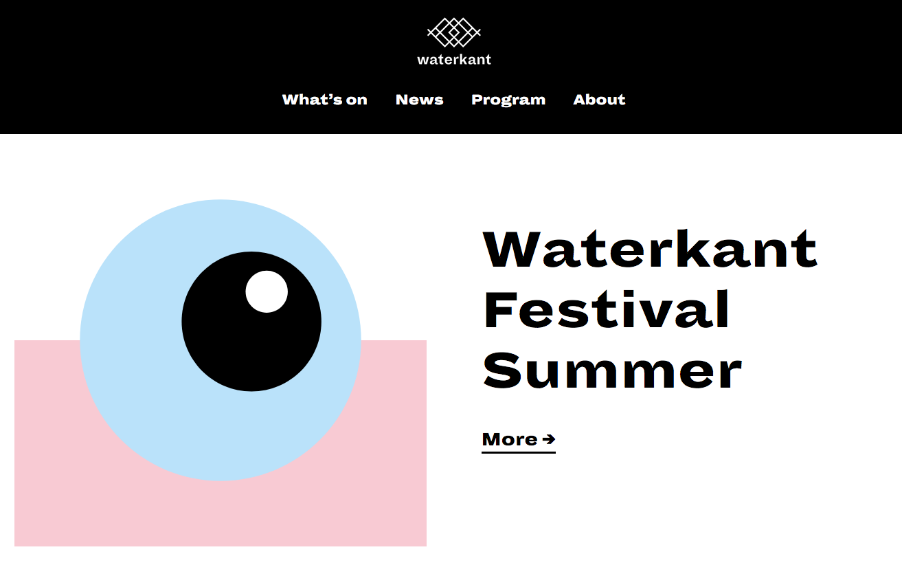
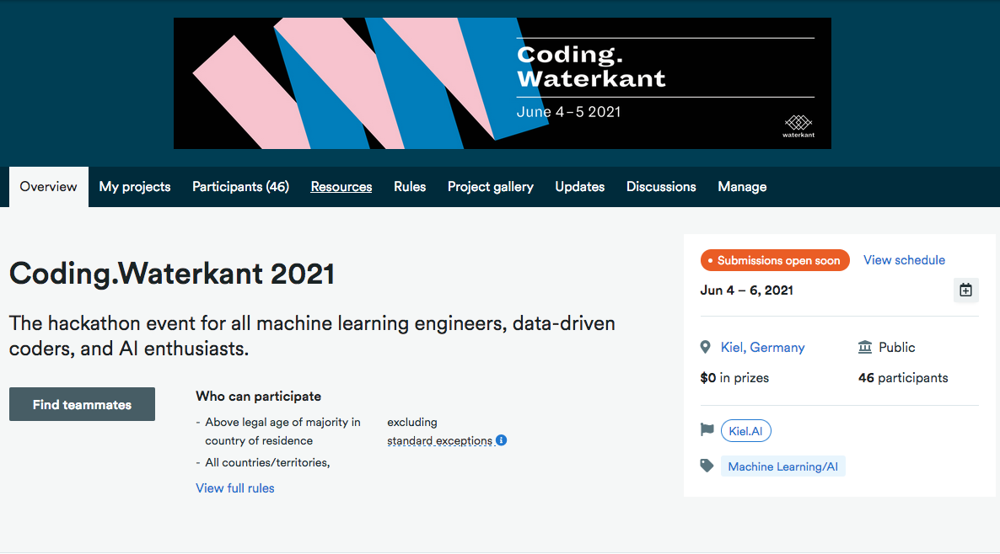
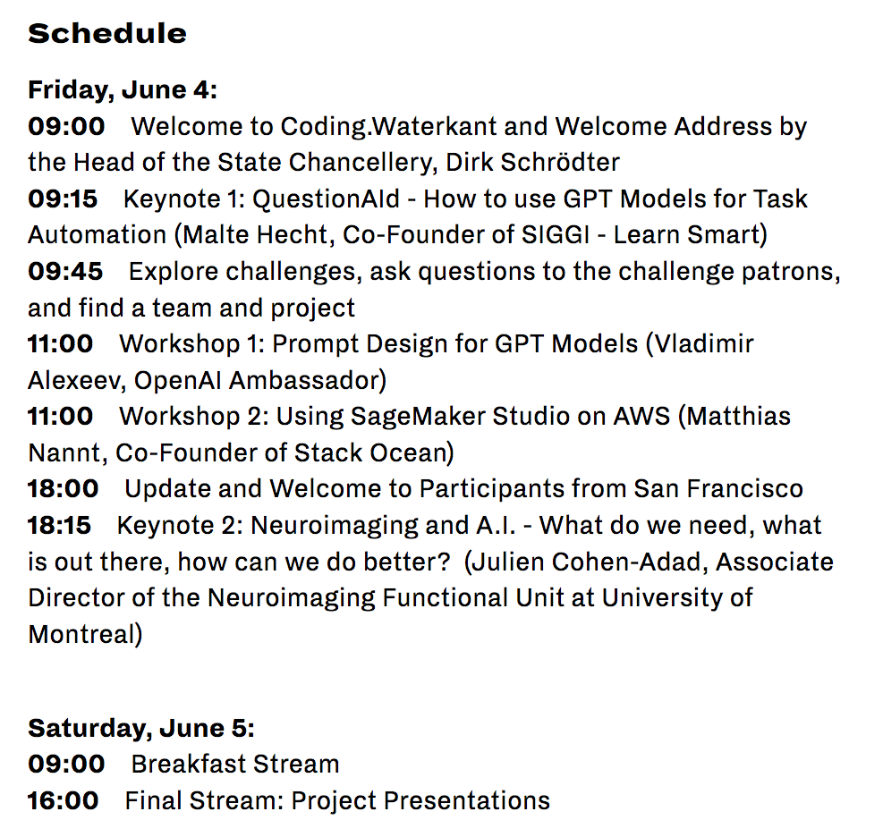

Advanced Deep Learning - Week 7
Course starts soon..
QUIZ
We will start now with a quiz based on the first week material
You have 6 minutes to answer the quiz.
The quiz link:
Quiz Link
It will be copied in Mattermost and in the Zoom chat.
Sessions
Waterkant
03-12 June
Hackathon
04-05 June
Schedule
The Challenges
Open Questions (10 Minutes)
Discussion
The unreasonable effectiveness of RNNs
Homeworks
Building a RNN - Step by Step
Character Level Language Model
Jazz Improvisation with LSTM
Register your project
For the next week